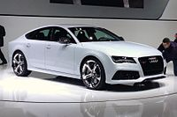
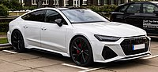

Загальна інформація
Audi RS 7 - спортивний п'ятидверний фастбек класу Гран Туризмо, що випускається підрозділом Audi Sport GmbH на платформі Audi A7. Автомобіль був представлений 16 січня 2013 року на Північноамериканському міжнародному салоні в Детройті.
Перше покоління (4G, 2013-2018)
Найпотужніша і дорога за ціною спортивна версія моделі представницького фастбека Audi A7, характеристики якої рівні автомобілю класу суперкарів (серія RS). Існує менш потужна спортивна версія Audi S7 (серія S) Зовнішній дизайн автомобіля відрізняється від стандартної версії A7 і більш потужною спортивною S7, спортивними повітрозабірниками спереду, сріблястими бічними дзеркалами заднього виду, фірмової вихлопною системою RS (опціонально може оснащуватися вихлопною системою Akrapovič), решітка радіатора «Singleframe» від Audi Sport GmbH доповнена логотипом quattro.
Для оббивки сидінь і простору салону використовується матеріали з натуральної шкіри і матеріали з алькантари. У базовій комплектації RS 7 застосовуються матеріали з карбону. RS7 оснащується бі-турбованим бензиновим двигуном V8 об'ємом 3993 см³. Потужність двигуна 560 к.с. (605 к.с. Performance) Крутний момент становить 700 Нм при 1750 об/хв.
Автомобіль оснащений повним приводом quattro, на задню вісь з активним диференціалом в звичайних умовах передається 60% тяги, а на передню 40%. Саме збалансований розподіл крутного моменту на осі надає автомобілю стійкість і стабільність на дорозі. Audi RS7 Sportback performance оснащений адаптивною пневматичною підвіскою з регульованим на 20 мм кліренсом. Розгін від 0 до 100 кілометрів на годину займає 3.9 секунди, у версії performance 3.7 сек. Максимальна швидкість в залежності від опції варіюється від 250 до 280 і 305 км/год. Audi RS7 оснащується спортивної гальмівною системою, може оснащуватися керамічними гальмами, камерою заднього виду, фронтальними подушками безпеки, контроль стійкості на дорозі, сенсори переднього і заднього виду, камер оповіщення заднього виду.
Рестайлінг 2014
У 2014 році був представлений RS 7 з оновленим дизайном (оптика, елементи кузова, колісні диски). На додаток до стандартної версії був доданий ще більш потужний RS 7 performance. У рестайлінгової моделі дизайнери оновили передню частину автомобіля, з'явилася решітка радіатора іншої форми, а також оновлена передня оптика. У власників оновленої RS7 з'явилася можливість оснастити автомобіль матричної оптикою. Невеликий модифікації піддалися задні світлодіодні ліхтарі. В інтер'єрі зміни не такі значні: змінилися підкермові пелюстки, мультимедійна система отримала оновлення операційної системи до останньої версії.
Двигуни
Перше покоління оснащувалось двома типами двигунів:
- 4.0 L TTFSI V8 560 к.с. 700 Нм (RS7)
- 4.0 L TTFSI V8 605 к.с. 700 Нм (RS7 Performance)
Друге покоління (C8, з 2019)
Друге покоління Audi RS 7 (C8) було представлено у вересні 2019 року. Двигун V8 4,0 потужністю 600 к.с. 800 Нм, з технологією "м'якого гібрида". Розгін 0-100 км/год дорівнює 3,6 секундам. Макс. швидкість 250/280/305 км/год. За замовчуванням RS7 доступний активний задній диференціал, вісь, що підрулює, і пневмопідвіска. За доплату - адаптивні амортизатори та карбоно-керамічні гальма.
Двигун
Дане покоління має лише один двигун:
- 4.0 L TTFSI V8 600 к.с. 800 Нм